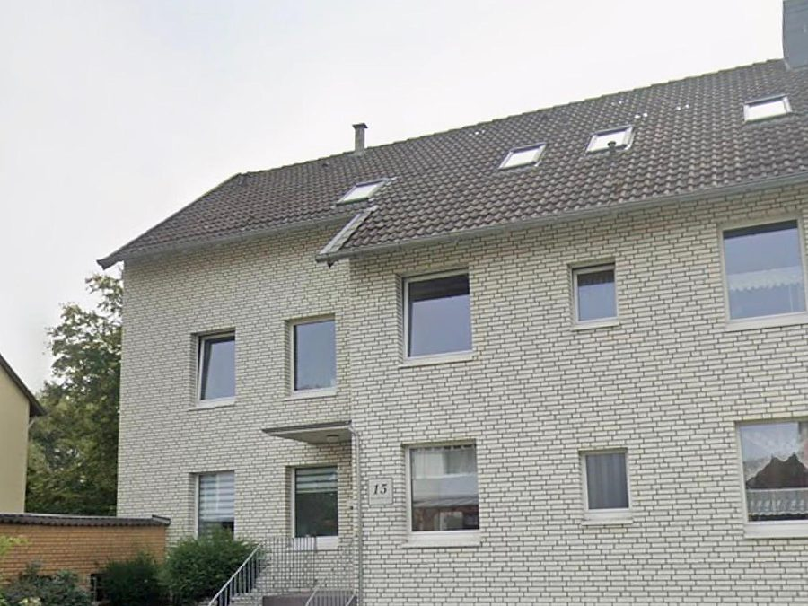

Mehrfamilienhaus, 6 Wohneinheiten
- Gebäudewert (ohne Grund)
- 460.000 €
- AfA bisher
- 2,0 % · 9.200 €
- Ermittelte Restnutzungsdauer
- 23 Jahre
- AfA danach
- 4,35 % · 20.000 €
+10.800 €
zusätzliche Abschreibung pro Jahr
Wer vermietet, schreibt meist pauschal 2 % pro Jahr ab – eine gesetzliche Typisierung, kein Befund an Ihrem Gebäude. Ist die tatsächliche Restnutzungsdauer kürzer, erlaubt § 7 Abs. 4 Satz 2 EStG eine höhere AfA. Wir weisen sie objektindividuell nach – aus Bauingenieurwesen und Architektur – mit Begehung vor Ort.
Wir sagen Ihnen unverbindlich, ob sich ein Gutachten für Ihr Objekt überhaupt lohnt.
Kein Callcenter, keine anonyme Plattform: Bei uns sprechen Sie mit denjenigen, die Ihre Immobilie auch begehen. In 32 Sekunden erfahren Sie, wann sich ein Restnutzungsdauergutachten lohnt und wie wir dabei vorgehen.
Der Bundesfinanzhof hat 2024 klargestellt: Der bloße Verweis auf die modellhafte Restnutzungsdauer reicht als Nachweis nicht aus.
| Ohne Gutachten | Online-Rechner / Ferngutachten | Unser Gutachten | |
|---|---|---|---|
| Grundlage | Gesetzliche Typisierung (50 Jahre) | Formel auf Basis von Eckdaten | Objektindividuelle Beurteilung der Bausubstanz |
| Besichtigung vor Ort | entfällt | nein | ja, immer |
| Maßstab der BFH-Rechtsprechung | – | nicht erfüllt | erfüllt |
| Dokumentation | keine | Rechenergebnis | Schriftliches Gutachten mit Fotos und Herleitung |
| Ansprechpartner | – | meist Plattform | Die Person, die auch vor Ort war |
| Kosten | 0 € | gering | 1.490 € Festpreis |
Der Rechner auf unserer Website liefert eine gute erste Orientierung – für den Nachweis gegenüber dem Finanzamt ersetzt er das Gutachten aber nicht. Zum kostenlosen Rechner
Bevor Sie irgendetwas beauftragen, prüfen wir kostenlos, ob sich ein Gutachten für Ihr Objekt überhaupt lohnt. Kommen wir zu dem Ergebnis, dass es das nicht tut, sagen wir Ihnen das offen – und Sie zahlen nichts.
Der Preis steht vorab verbindlich fest: 1.490 €, inklusive Ortsbegehung, Dokumentation und Besprechung. Keine Nachberechnung, keine Stundensätze, keine Überraschungen auf der Rechnung.
Modellwerte nach ImmoWertV für Wohngebäude, Stichtag 2026. Gelb markiert: Der rechnerische AfA-Satz liegt über den gesetzlichen 2 %.
| Baujahr | kaum modernisiert | teilmodernisiert | umfassend modernisiert |
|---|---|---|---|
| bis 1960 | ca. 24 J. · 4,2 % | ca. 30 J. · 3,3 % | ca. 40 J. · 2,5 % |
| 1961–1975 | ca. 24 J. · 4,2 % | ca. 32 J. · 3,1 % | ca. 42 J. · 2,4 % |
| 1976–1990 | ca. 30 J. · 3,3 % | ca. 38 J. · 2,6 % | ca. 48 J. · 2,1 % |
| 1991–2005 | ca. 42 J. · 2,4 % | ca. 50 J. · 2,0 % | ca. 58 J. · 1,7 % |
Reine Modellwerte zur Orientierung (Gesamtnutzungsdauer 80 Jahre, Mindest-Restnutzungsdauer nach Modell). Sie ersetzen keine Begutachtung: Der tatsächliche Wert hängt vom konkreten Zustand Ihres Gebäudes ab und kann nach oben wie nach unten abweichen. Genau diese objektindividuelle Beurteilung ist der Kern des Gutachtens.
So wirkt sich eine kürzere Restnutzungsdauer aus: Der Gebäudewert bleibt gleich – nur der Zeitraum, über den Sie ihn abschreiben, wird kürzer. Das erhöht Ihre Abschreibung Jahr für Jahr.

Beispielrechnungen für typische Objekte unseres Bewertungsgebiets. Sie zeigen die Größenordnung – bei vergleichbaren Gebäuden liegt die zusätzliche Abschreibung meist zwischen 7.000 € und 11.000 € pro Jahr. Ihr tatsächliches Ergebnis hängt vom Zustand Ihres Gebäudes und Ihrem Gebäudewertanteil ab und wird im Gutachten objektindividuell hergeleitet. Die steuerliche Auswirkung berechnet Ihre Steuerberatung.
Die gesetzliche Gebäude-AfA unterstellt pauschal eine Nutzungsdauer von 50 Jahren (Fertigstellung 1925–2022), 40 Jahren (vor 1925) bzw. 33 Jahren (ab 2023). Ob Ihr konkretes Haus diesem Schema entspricht, prüft dabei niemand. Ein Mehrfamilienhaus von 1965 mit originaler Haustechnik, alter Fassade und Instandhaltungsrückstand hat wirtschaftlich in aller Regel keine 50 Jahre mehr vor sich – abgeschrieben wird trotzdem so, als hätte es sie.
Gebäude aus den 1950er- bis 1980er-Jahren, deren tragende Substanz und Ausbauelemente den ursprünglichen Lebenszyklus größtenteils durchlaufen haben.
Punktuelle Reparaturen ersetzen keine Kernsanierung. Ohne Erneuerung von Dach, Fassade, Fenstern, Heizung und Leitungen bleibt das wirtschaftliche Alter hoch.
Aufgeschobene Maßnahmen, Feuchte, veraltete Elektrik oder ineffiziente Heiztechnik verkürzen die wirtschaftlich sinnvolle Restnutzung spürbar.
Je höher Ihr persönlicher Grenzsteuersatz und je größer der Gebäudeanteil am Kaufpreis, desto stärker wirkt sich jedes Jahr zu niedriger AfA aus.
Ein vereinfachtes Rechenbeispiel – keine Zusage für Ihr Objekt.
| Position | Standard-AfA | Mit Gutachten |
|---|---|---|
| Gebäudeanteil (ohne Grund und Boden) | 400.000 € | 400.000 € |
| Angesetzte Nutzungsdauer | 50 Jahre | 25 Jahre |
| AfA-Satz | 2,0 % | 4,0 % |
| Abschreibung pro Jahr | 8.000 € | 16.000 € |
| Zusätzliches AfA-Volumen pro Jahr | — | + 8.000 € |
Beispielhafte Modellrechnung bei einem Gebäudeanteil von 400.000 € und einer gutachterlich ermittelten Restnutzungsdauer von 25 Jahren. Das zusätzliche AfA-Volumen mindert die Bemessungsgrundlage; wie stark sich das auf Ihre Steuerlast auswirkt, hängt von Ihrem persönlichen Steuersatz und Ihrer Gesamtsituation ab. Wir erstellen das Gutachten – die steuerliche Beratung und Erklärung übernimmt Ihre Steuerberatung.
Erst größenordnen, dann entscheiden: Mit unserem kostenlosen Rechner schätzen Sie in zwei Minuten, welche Restnutzungsdauer für Ihr Gebäude realistisch ist.
Zum RND-Rechner →Kein Rechenwert von der Stange, sondern eine bautechnische Untersuchung Ihres Gebäudes – nachvollziehbar dokumentiert.
Aufnahme von Konstruktion, Bausubstanz, Dach, Fassade, Fenstern, Haustechnik und Ausbau – mit fotografischer Dokumentation der Befunde.
Beurteilt wird der tatsächliche Erhaltungszustand: Was ist erneuert, was ist original, wo besteht Instandhaltungsrückstand?
Maßnahmen an Dach, Fassade, Fenstern, Heizung, Leitungen und Ausbau werden mit Jahreszahlen erfasst und in ihrer Wirkung eingeordnet.
Sie erhalten ein schriftliches Gutachten, das die ermittelte Restnutzungsdauer herleitet – als Grundlage für die steuerliche Prüfung durch Ihre Steuerberatung.
Viele Ratgeber im Netz geben einen Stand wieder, der seit Dezember 2025 nicht mehr aktuell ist.
Das BMF-Schreiben vom 22.02.2023 verlangte für den Nachweis einer kürzeren Nutzungsdauer öffentlich bestellte oder nach ISO 17024 zertifizierte Sachverständige. Dieses Schreiben wurde mit BMF-Schreiben vom 01.12.2025 ersatzlos aufgehoben. Auch die zwischenzeitlich geplante Verschärfung in § 11c EStDV kam nicht: Sie wurde im November 2025 gestrichen.
Quelle: BMF-Schreiben vom 01.12.2025 zur AfA von Gebäuden
Der BFH hat entschieden, dass sich Steuerpflichtige jeder Darlegungsmethode bedienen können, die im Einzelfall geeignet erscheint – ein Bausubstanzgutachten ist nicht zwingend (BFH v. 28.07.2021, IX R 25/19). Bekräftigt wurde das 2024: zulässig ist jede sachverständige Methode (BFH v. 23.01.2024, IX R 14/23).
Derselbe BFH stellte 2024 ausdrücklich klar, dass der bloße Verweis auf die modellhafte Restnutzungsdauer nach ImmoWertV nicht ausreicht. Genau das liefern aber viele günstige Online-Angebote: eine Zahl aus einer Formel, ohne Blick auf das Gebäude. Was trägt, ist eine objektindividuelle, nachvollziehbar begründete Beurteilung der Bausubstanz – und die entsteht vor Ort.
Die Angaben geben den Rechtsstand Juli 2026 wieder und ersetzen keine steuerliche Beratung im Einzelfall. Ob das Finanzamt eine kürzere Restnutzungsdauer anerkennt, entscheidet sich immer am konkreten Fall.
Sie schildern uns Objekt, Baujahr und Nutzung – über das Formular oder telefonisch. Unverbindlich und in wenigen Minuten erledigt.
Wir sagen Ihnen ehrlich, ob sich ein Gutachten für Ihr Objekt voraussichtlich lohnt – und wenn nicht, warum. Kostenlos.
Sie senden uns vorhandene Unterlagen: Grundrisse, Baubeschreibung, Modernisierungen mit Jahreszahlen, Kaufvertrag.
Wir nehmen das Gebäude vor Ort auf: Substanz, Technik, Zustand, Instandhaltungsrückstand – fotografisch dokumentiert.
Sie erhalten das schriftliche Gutachten mit hergeleiteter Restnutzungsdauer, in der Regel innerhalb von ein bis zwei Wochen.
Wir gehen das Ergebnis mit Ihnen durch – auf Wunsch gemeinsam mit Ihrer Steuerberatung, die die steuerliche Umsetzung übernimmt.
Ein Restnutzungsdauergutachten wirkt über Jahrzehnte – und genau so lange bleiben wir Ihr Ansprechpartner dafür.
Genau die Kompetenz, auf die es beim Nachweis der tatsächlichen Restnutzungsdauer ankommt.
Keine Pauschalzahl aus dem Rechner, keine Versprechen über Steuerersparnisse und keine Bewertung ohne Ortstermin. Wenn wir nach der ersten Einschätzung zu dem Ergebnis kommen, dass sich ein Gutachten für Ihr Objekt nicht lohnt, sagen wir Ihnen das – bevor Sie etwas beauftragen.
„Guter, transparenter und zuverlässiger Service. Ich brauchte ein Wertgutachten für einen Erbrechtsfall.“
„Sehr angenehmer Kontakt und absolut zuverlässige Arbeit. Die Bewertung wurde schnell erstellt und alles wurde verständlich erklärt.“
„Eingehende Beratung und fachliche Expertise haben zu einem sehr guten und schnellen Ergebnis geführt. Es ging um die Bewertung eines größeren Grundstückes.“
„Bin super zufrieden! Alles ging schnell und unkompliziert. Die Bewertung war nachvollziehbar und ich hab mich gut aufgehoben gefühlt. Kann ich nur weiterempfehlen.“
Bei größeren Objekten mit vielen Einheiten nennen wir den Preis vorab verbindlich.
Ein Restnutzungsdauergutachten weist sachverständig nach, wie lange ein Gebäude bei ordnungsgemäßer Instandhaltung wirtschaftlich noch genutzt werden kann. Weicht diese tatsächliche Restnutzungsdauer von der gesetzlichen Typisierung ab, kann nach § 7 Abs. 4 Satz 2 EStG eine höhere Gebäude-AfA angesetzt werden. Grundlage ist eine objektindividuelle Beurteilung der Bausubstanz – nicht ein pauschaler Rechenwert.
Sinnvoll ist die Prüfung vor allem bei vermieteten Gebäuden älteren Baujahrs, bei denen seit langem keine Kernsanierung stattgefunden hat, sowie bei Objekten mit erkennbarem Instandhaltungsrückstand oder eingeschränkter Nutzbarkeit. Je größer der Gebäudeanteil am Kaufpreis und je höher Ihr persönlicher Steuersatz, desto stärker wirkt sich eine kürzere Restnutzungsdauer aus.
Hilfreich sind Grundrisse und Baubeschreibung, Angaben zu Baujahr und durchgeführten Modernisierungen mit Jahreszahlen, Wohn- bzw. Nutzflächen, der Kaufvertrag sowie – falls vorhanden – Energieausweis und Unterlagen zu Instandhaltungsmaßnahmen. Fehlende Unterlagen sind kein Ausschlussgrund; wir erfassen den Zustand bei der Begehung selbst.
Wir nehmen das Gebäude vor Ort auf: Konstruktion und Bausubstanz, Dach, Fassade, Fenster, Haustechnik, Heizung, Leitungen sowie den Zustand der Ausbauelemente. Die Begehung dauert je nach Objektgröße rund ein bis zwei Stunden. Befunde werden fotografisch dokumentiert und fließen nachvollziehbar in die Beurteilung ein.
Nach der Begehung und Sichtung der Unterlagen erhalten Sie das fertige Gutachten in der Regel innerhalb von ein bis zwei Wochen. Ist eine Frist zu wahren – etwa im Einspruchsverfahren – sprechen Sie uns bitte direkt darauf an.
Ein Restnutzungsdauergutachten kostet bei uns 1.490 € zum Festpreis inklusive Ortsbegehung und Dokumentation. Das Erstgespräch ist kostenlos. Bei größeren Objekten mit vielen Einheiten nennen wir den Preis vorab verbindlich.
Maßgeblich sind Baujahr und Konstruktion, der Zustand der langlebigen Bauteile, durchgeführte Modernisierungen an Dach, Fassade, Fenstern, Heizung und Leitungen, der Instandhaltungsstand sowie Grundriss, Ausstattung und wirtschaftliche Nutzbarkeit. Vernachlässigte Instandhaltung verkürzt die Restnutzungsdauer, umfassende Modernisierung verlängert sie.
Nein. Das BMF-Schreiben vom 22.02.2023, das öffentlich bestellte oder nach ISO 17024 zertifizierte Sachverständige verlangte, wurde mit BMF-Schreiben vom 01.12.2025 ersatzlos aufgehoben. Maßgeblich ist die Rechtsprechung des Bundesfinanzhofs: Zulässig ist jede sachverständige Methode, die im Einzelfall geeignet ist. Entscheidend sind fachliche Substanz und eine nachvollziehbare, objektindividuelle Begründung.
Lassen Sie in einem kostenlosen Erstgespräch prüfen, ob sich ein Restnutzungsdauergutachten für Ihre Immobilie lohnt. Ehrliche Einschätzung – auch wenn sie gegen einen Auftrag spricht.
oder direkt: +49 (0) 174 744 5452 · Mo–Fr 09:00–18:00Ob Immobilienbewertung oder Wertermittlung – wir bewerten Häuser, Eigentumswohnungen und Grundstücke in Hannover und der gesamten Region persönlich, neutral und mit bautechnischem Sachverstand.